日本富士急樂園介紹
富士急樂園有著金氏世界紀錄的雲霄飛車「FUJIYAMA」、「DODODONPA」，還有著嚇人度極高的鬼屋「戰慄迷宮」，坐在遊樂設施上以各種高度來欣賞富士山，包準讓你玩到捨不得回家！富士急樂園在遊玩方式比較特別，入園費是免費的，但若想要玩遊樂設施的話有兩種方式可以讓你選擇。
富士急樂園相較於東京迪士尼，設施會更加適合大人、青少年，去到迪士尼，為的不外乎就是走入童話、回憶童年，而來到富士急樂園，肯定就是要挑戰自己的極限！
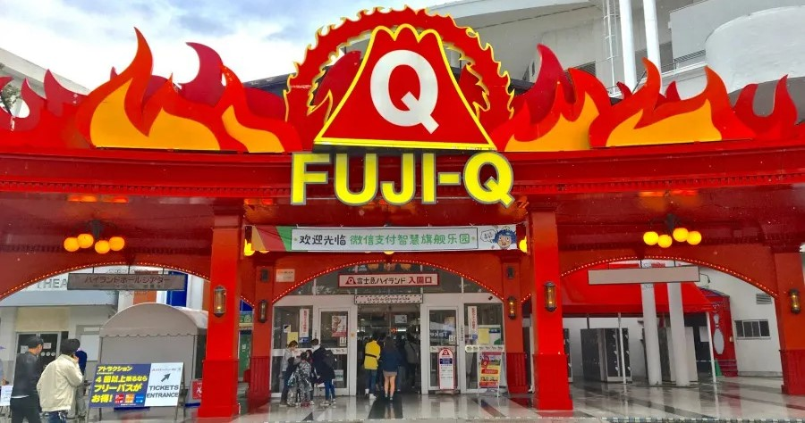
交通和購票
交通方式
➢ 搭乘高速巴士前往
在「Busta新宿」、「澀谷MarkCity」、「東京站」、「羽田機場」、「横濱站」等多個交通大站，皆可搭高速巴士，在緊鄰樂園的「高原度假酒店及水療中心」停車場內的富士急樂園巴士總站下車，最快1小時40分鐘可達。
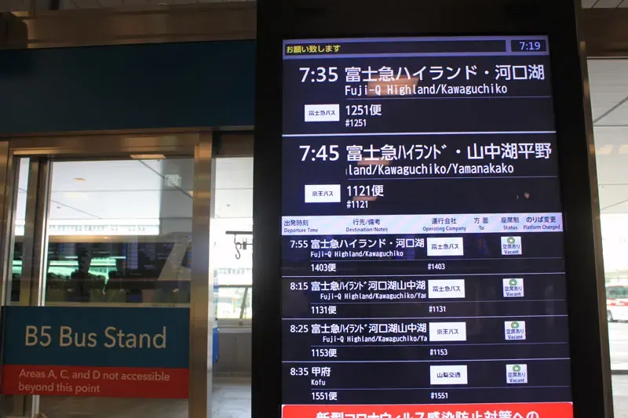
➢ 搭乘電車前往
如自JR「新宿站」出發，可搭乘快速方便、每日3班來回的「富士回遊」特急列車。從「大月站」出發還有機會搭乘到可愛的湯瑪士列車，在富士急行線官網可查詢到時刻表。
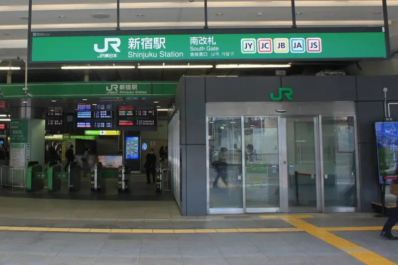
➢ FujiQ-Line 巴士
FujiQ-Line 是富士急樂園開設的高速巴士線，每天只有固定一個去程和回程班次。在新宿/上野/横浜/大宮都設有專線。而乘坐FujiQ-Line專線是需要門票和車票一個套餐一起買的，套餐價格比自己坐車進去再買門票更划算。
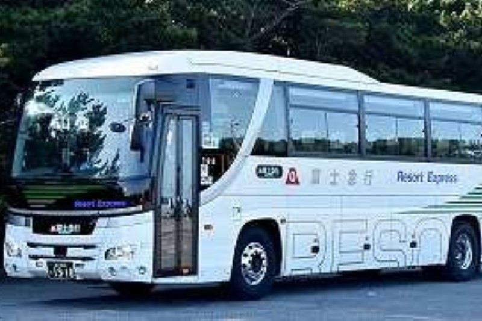
設施收費方式
➢ 一日券
一日票進場後可以無限暢玩，若預計在園區內待上整天，還是建議買「一日券」最划算，只要玩超過4種設施或玩4次就可回本。可選擇當天現場購票或事先在網站上購買。
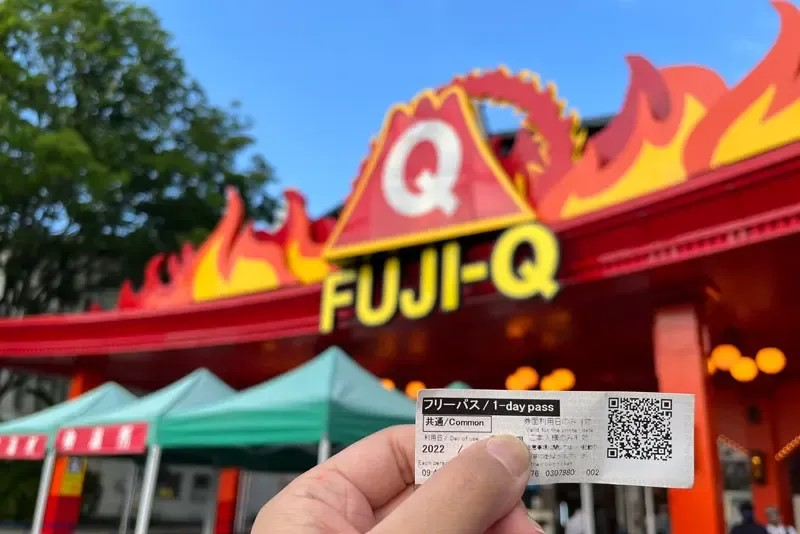
➢ 依設施收費
富士急樂園從2018年7月起富士急樂園入園免費，只需購買想搭的遊樂設施券即可。而每一項的單項費用都不大相同，大約落在日幣8百元至2千元左右。
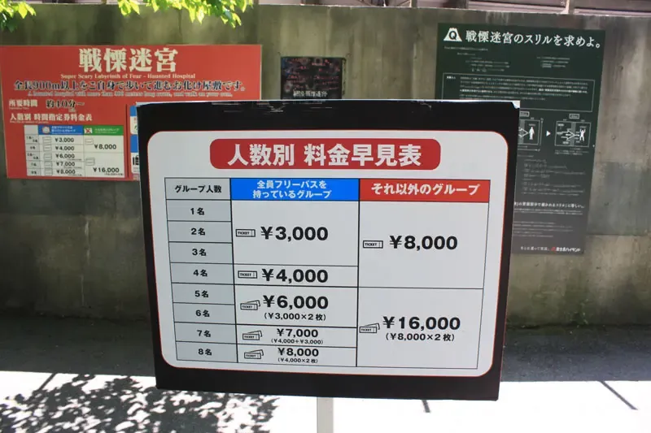
➢ 絶叫優先券
購買「絶叫優先券」後，不用排隊就能搶先搭乘熱門設施。「絶叫優先券」依據不同設施與時期有著不同票價，另外須留意此券無法單獨使用，需搭配一日券或該設施的票券一起使用，購買後如未使用亦不提供退費。
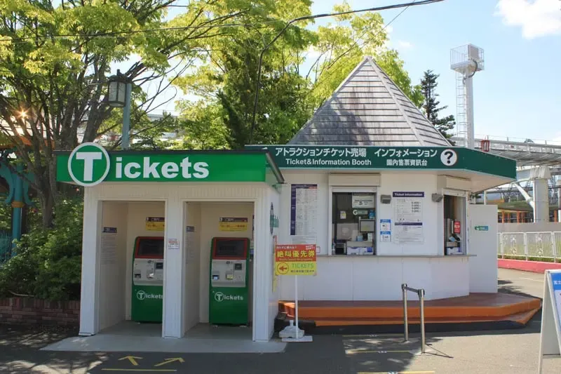
票價說明
| 富士急樂園 | 官方價格（日幣） | 備註 |
|---|---|---|
| 入園門票 | 免費 | ＊僅為入場免費 |
| 單項設施 | 依設施不同 | ＊親子項目日幣400-500不等
＊其餘設施日幣800-2000不等 ＊鬼屋計價方式不同 |
| 一日通票 | 成人：6000-7800
國高中：5500-7300 小學生：4400-5000 65歲以上：2100-2500 |
＊官方每月價格略有不同
＊通票含遊樂設施無限暢玩 |
| 星光半日票 | 成人：4100-5900
國高中：3800-5600 小學生：3500-4100 65歲以上：1700-2000 |
＊票券規則除入場時間為下午2點起外，其餘與一日通票相同 |
| 絶叫優先券 | 雲霄飛車的價格落於1,400～2,500日圓間
「絕望要塞」、「鐵骨番長」等7座中型設施的票價則落於600～2,500日圓間 |
＊使用日前3天的18:00起販售至前30分鐘
＊熱門設施限定，價格因淡旺季而有所不同 ＊當日庫存將在夢幻旋轉木馬旁售票處販售 |
設施
設施介紹
| 👉尖叫系列👈 | 👉親子項目👈 |
|---|---|
| ZOKKON-自行車式過山車
過山車之王-FUJIYAMA 高飛車-最陡過山車 Eejanaika-翻轉過山車 Do-Dodonpa-急速過山車 Tentekomai-空中旋轉飛行機 鐵骨番長 披薩大擺錘 驚魂跳樓機 尖叫大擺鐘 Nagashimasuka-衝浪漂流 冷槍 進擊巨人THE RIDE -Wall Maria最終奪回戰略- |
麗莎與卡斯柏的天空旅行
富士飛行社 閃亮之星摩天輪 魔法咖啡杯、旋轉鞦韆 空中腳踏車、忍道館 遊戲忍術嘉年華 湯瑪士小火車天地 尼亞和動物過山車 淑辰哈羅德的天空巡邏隊 大家來旋轉、克蘭奇起降機 驚險水上飛船、GO!GO!布斯卓 麗莎與卡斯柏的魔鏡迷宮 艾非爾鐵塔的浪滿旋轉木馬 |
| 👉恐怖系列👈 | 👉主題園區👈 |
| 戰慄迷宮：慈急綜合醫院
3D火影忍者射擊道場 絕望要塞-IMPOSSIBLE GAMES- |
鬼太郎的妖怪胡同-妖怪夜話
火影忍者VR遊樂設施”幻影劇院” |
| 👉美食👈 | 👉禮品店👈 |
| 速食餐廳&小吃攤販
CAFE BRIOCHE 美食廣場 一樂拉麵 |
SHOP FUJIYAMA
自由堂藥局 火影忍者聯名店 |
必玩設施-尖叫系列
1. 過山車之王-FUJIYAMA
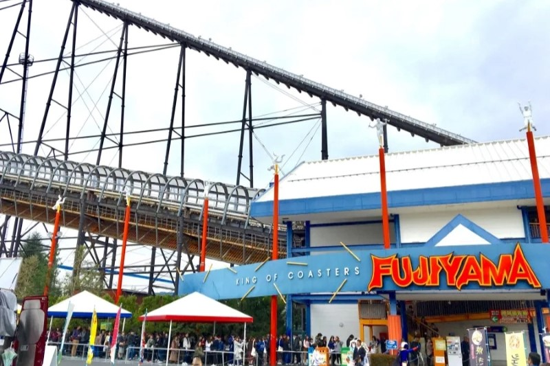
😱刺激指數：★★★★★
這項遊樂設施的高度可是擁有金氏世界紀錄，看著雲霄飛車緩慢的爬升，可以感受到胃在翻攪啊～在最高點的時候，可以遠眺富士山，但正當你想要再多欣賞兩眼的時候雲霄飛車就會開始往下衝，非常刺激好玩！在全程3分鐘36秒間，遊客能夠感受自20層樓高往下急速墜落、180度迴力鏢式旋轉、急停等各種瘋狂體驗。
2. 高飛車-TAKABISHA
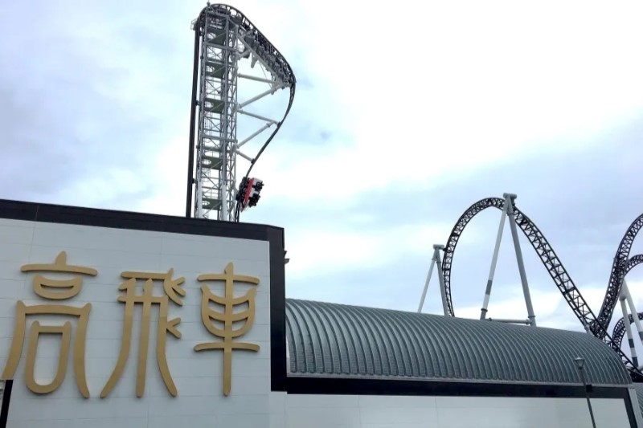
😱刺激指數：★★★★★
高飛車不但很高，還會垂直降落，讓你直接體驗雲霄飛車＋自由落體的MIX版本，而且最刺激的是在爬升會突然加速，下降時會突然停住，重點是因為車廂只有一節，所以更輕、加速度時更快！除了有速度感，還有7次的迴轉、逼近90度垂直下降，一上去就是會讓你無止盡的尖叫。
3. 滾輪式雲霄飛車-Eejanaika
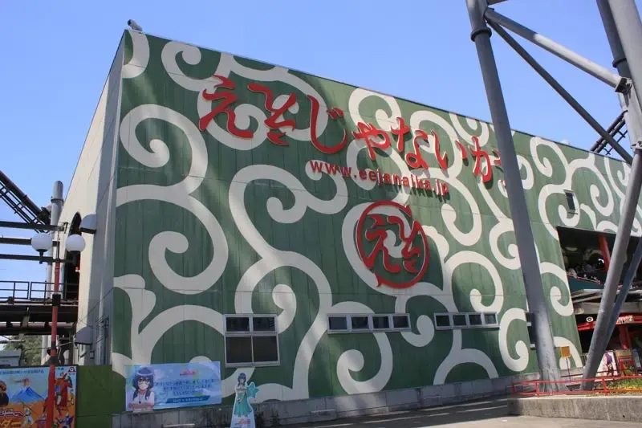
😱刺激指數：★★★★★
Eejanaika也是人氣設施之一，除了軌道有坐旋轉設計之外，車體本身也會選轉，等於你坐上去就是自轉＋公轉，旋轉次數高達14次，下一步雲霄飛車要怎麼轉你真的不知道啊～強烈建議要上去之前，絕對要睡飽和清空肚子！
4. 披薩大擺錘
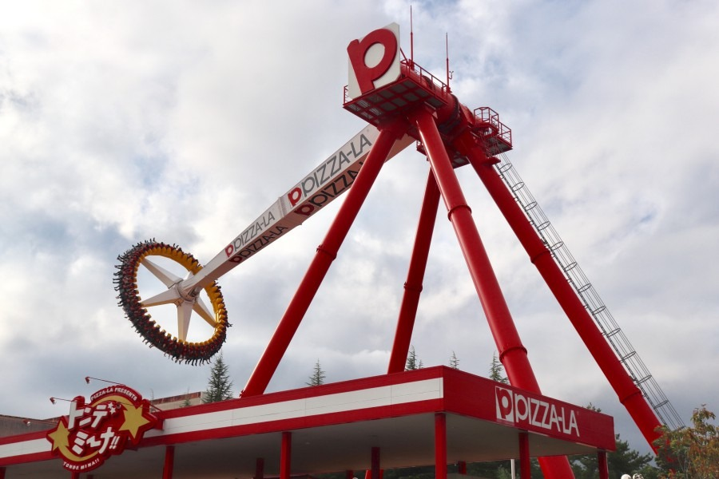
😱刺激指數：★★★★★
這個遊樂設施一次可以容納五十人，高達25米高的大圓盤式座椅，在擺盪時自己也會跟著旋轉，就像是鐘擺一樣，任由遊樂設施擺盪，每一次擺動都會不知道這次會以哪種方式下墜，非常刺激好玩！在上面被甩的頭暈目眩，哪邊是天哪邊是地都認不得了，有膽量的你也快來挑戰看看～
5. 鐵骨番長
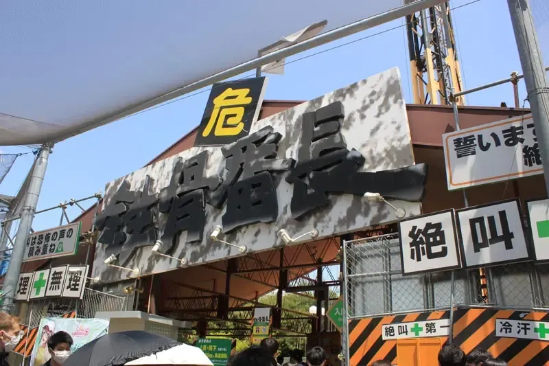
😱刺激指數：★★★
坐落在寂靜園區、四周有樹木環繞的「鐵骨番長」，高度超過50公尺，宛如工地起重機般將人吊起時升降，再以時速51公里水平高速旋轉，從高空傳來的淒厲尖叫聲就能感受到設施搭起來有多嚇人，推薦給想體驗與高空跳傘同等級刺激的朋友挑戰。
必玩設施-恐怖系列及挑戰賽
1. 戰慄迷宮：慈急綜合醫院
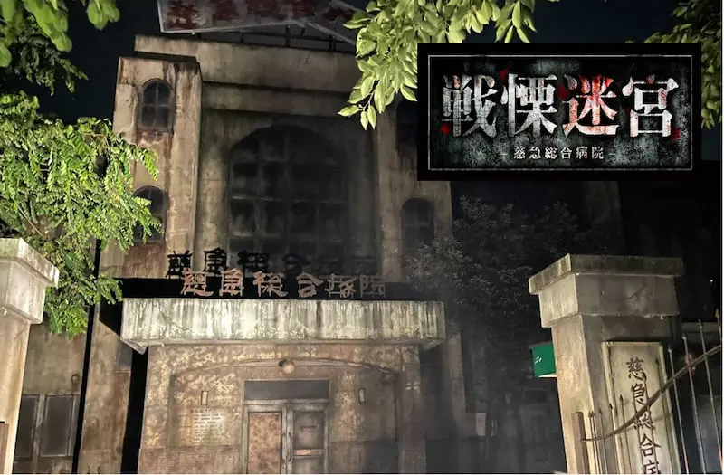
😱刺激指數：★★★★★
富士急樂園「戰慄迷宮～慈急綜合醫院～」號稱史上最長最恐怖的鬼屋，要走完全程近900公尺的距離，得花上約50分鐘。
營業至今邁向第19個年頭的「戰慄迷宮」，透過視覺聽覺等感官刺激，驚悚級數再升級。在過去曾登場過的「手燈」也於改版中復活，遊客僅能手持光線微弱的手燈，於近乎全黑的醫院內探險。
※欲挑戰者請於「戰慄迷宮」前的售票機另外購買入場時段券。
2. 絕望要塞-IMPOSSIBLE GAMES
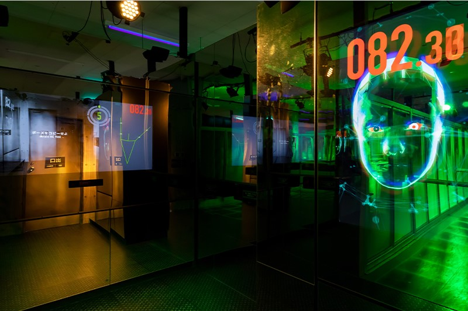
😱刺激指數：★★★★★
⚠️ 難解度：★★★★★
「你可以看到世界上最好的表演」，這樣的謠言讓來自世界各地的遊客聚集在此。在絕望要塞中，你必須要在神秘人Z所建造的紅色宅邸中生存，在神秘、驚悚的遊戲氛圍，你是否能夠挑戰成功、逃離這座紅色宅邸呢？這是一款參與度極高的遊戲，每場需花費30-90分鐘的時間，每組1-3人，其內容和規則都是不固定的，也無法選擇！
必玩設施-親子系列
1. 富士飛行社
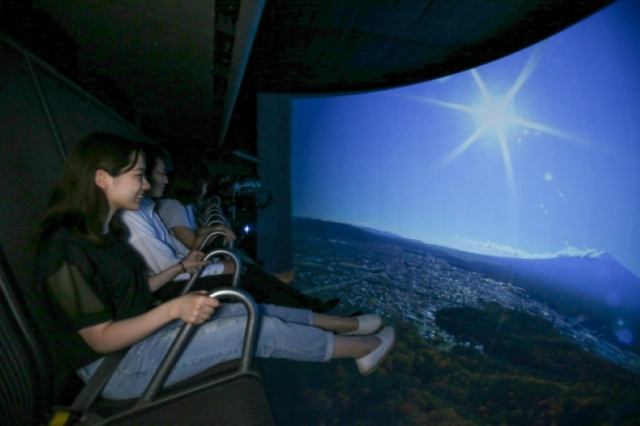
✈️飛行體驗：★★★★★
這是日本第一個模擬飛行體驗的遊樂設施，包圍座位的巨大螢幕上會播放富士山的影像，能夠享受飛行在富士山上空的特殊體驗。
整個遊戲是以坐在飛機上從空中欣賞富士山周邊景色為主題，能從靜岡、山梨等多個方向來欣賞富士山，並且能從空中欣賞隨著春夏秋冬四季氣候改變的富士山景色。
2. 閃亮之星摩天輪
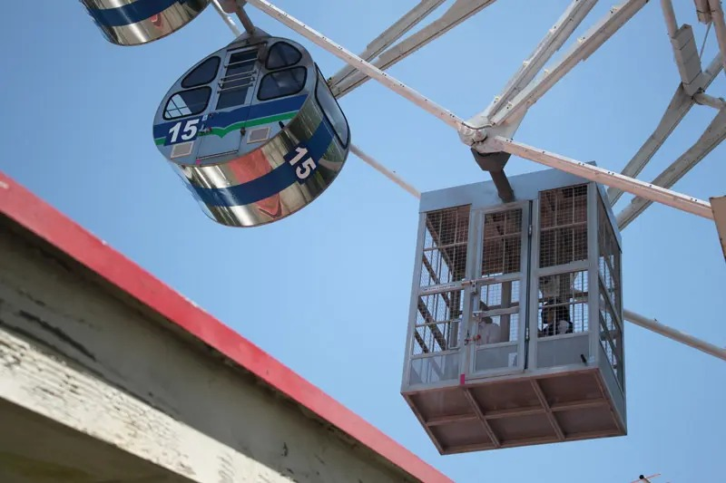
🌄風景指數：★★★★★
高達50公尺的「閃亮之星摩天輪」，在2021年7月21日推出2座監獄車廂，讓本該是浪漫的摩天輪成了6面鏤空的不鏽鋼牢籠。這座史無前例的空中監獄車廂，一台只能「關」2人，沒有擋風玻璃更沒有座位，讓被關在裡頭的「受刑者」面對富士山「懺悔」，體驗11分鐘被囚禁在高空中的滋味。
從摩天輪內可以俯瞰園區並眺望富士山。
3. 空中腳踏車
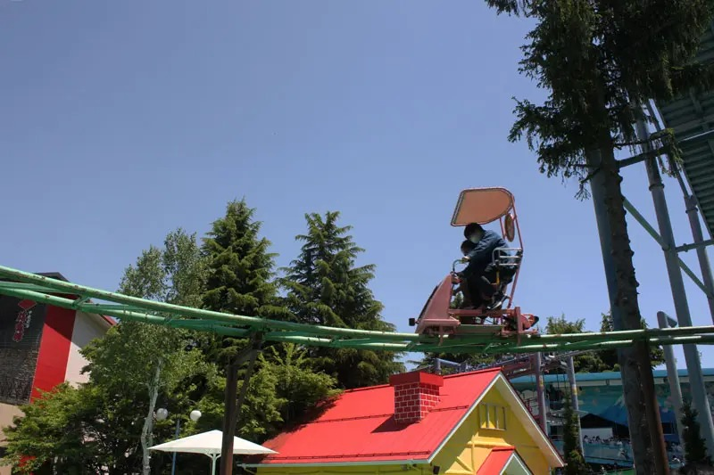
👪親子同樂：★★★★★
外觀兼具可愛與溫馨風格的雙人座「空中腳踏車」（スカイサイクル），行駛在離地面1.8〜6.3公尺高、全長336公尺的軌道上，穿過綠色的森林，緩慢地在園區內繞行，雖然只有短短5分鐘，卻能讓人充分放鬆身心，享受自在的空中漫步之旅。
必玩設施-主題園區
1. 湯瑪士樂園
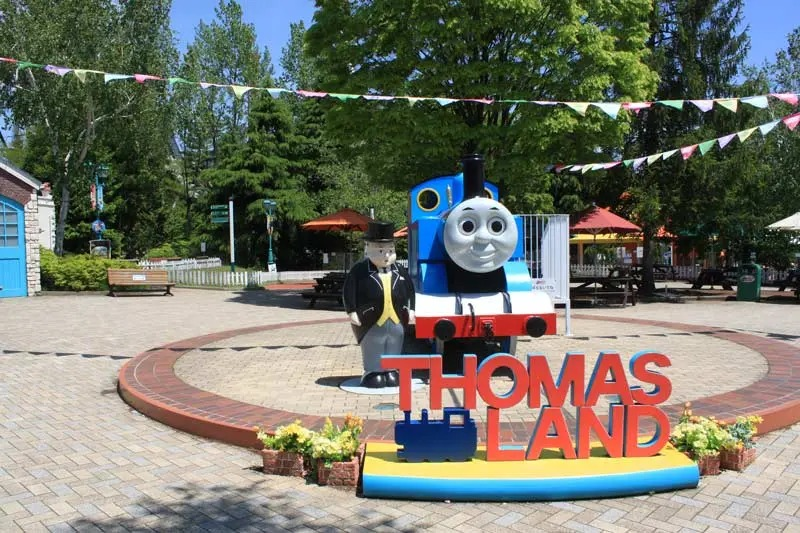
🚂還原程度：★★★★★
位於富士急樂園內的「湯瑪士樂園」，是日本唯一一座湯瑪士小火車的戶外主題樂園。園區內除了有小火車、3層樓高的立體迷宮、室內尋寶遊戲等12種以湯瑪士為主題的遊樂設施，還有餐廳、商店及多種湯瑪士相關卡通人物的裝置藝術，甚至還有販售造型可愛的現烤湯瑪士雞蛋糕及各種周邊商品。
2. 麗莎與卡斯柏小鎮
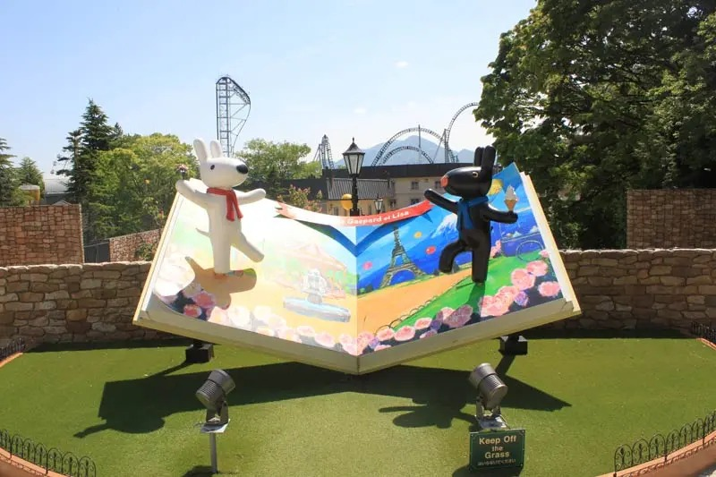
🏛️還原程度：★★★★★
「麗莎與卡斯柏」是來自法國人氣繪本的角色，而全球第一座主題樂園就設立在富士急樂園旁。從第一入園口進入富士急樂園後，就會抵達此區，在此可以欣賞迷你艾菲爾鐵塔，並漫步於設有噴泉和種植美麗花卉的歐風庭園，也有博物館和奇幻魔境迷宮可以參觀；在夜晚點燈後，更是充滿浪漫氣息，宛如置身巴黎。
3. 鬼太郎妖怪橫丁
👺還原程度：★★★★★
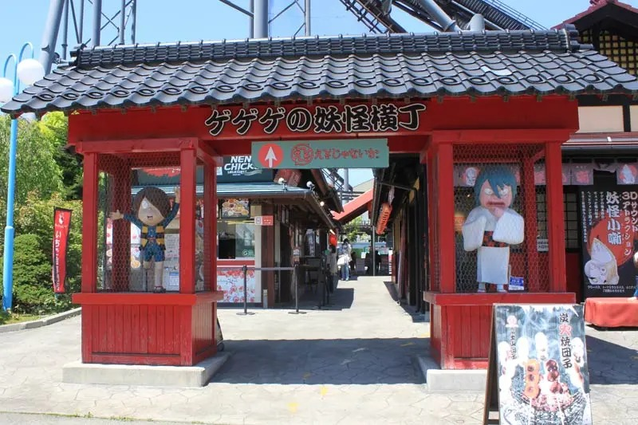
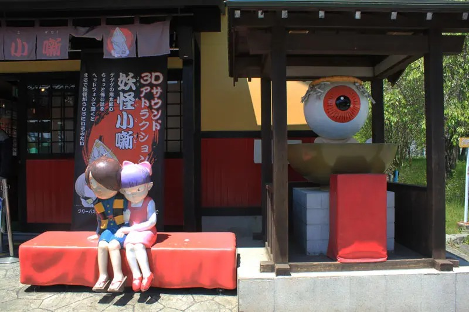
👺還原程度：★★★★★
巷子內的「妖怪商店」裡售有約200種鬼太郎周邊商品，粉絲千萬別錯過；而這裡隨處可見鬼太郎的夥伴們以壁畫、雕像等形式出現在身邊，別忘了和這些可愛的裝置藝術合影留念，留下美好回憶。
在「鬼太郎妖怪橫丁」（ゲゲゲの妖怪横丁）有著精緻的主題造景和茶屋提供的美味烤糰子。當然最重要的鬼太郎相關遊樂設施也沒有少！在陰暗小房間戴上耳機後，就可以聽到鬼太郎的妖怪夥伴們在耳邊細語，加上3D環繞音效的加持，彷彿妖魔鬼怪自四面八方來襲，相當嚇人。
4. 富士木葉忍者村
🥷還原程度：★★★★★
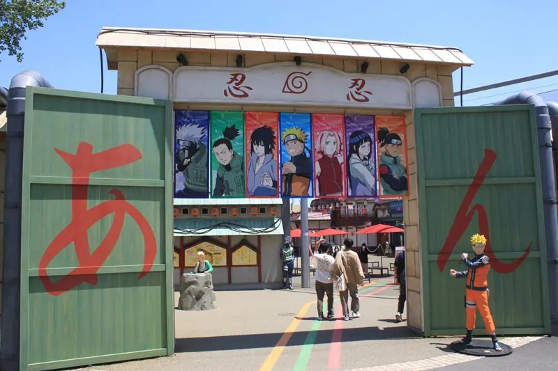
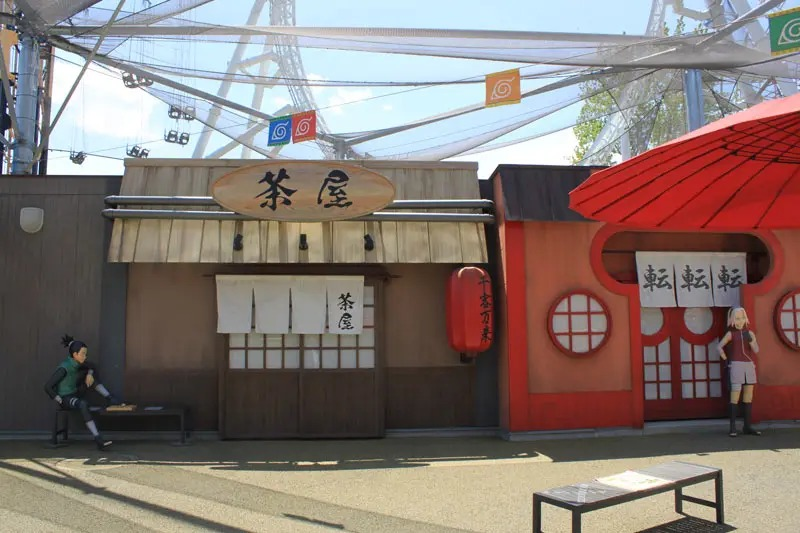
🥷還原程度：★★★★★
「火影忍者×博人 富士木葉隱村」是以在全世界都擁有廣大人氣及眾多粉絲的動漫作品《火影忍者》和《BORUTO-火影新世代-NARUTO NEXT GENERATIONS-》故事世界觀來打造的園區，有火影主題的遊樂項目、展覽館、餐廳等各種設施。
在忍者村中推薦的是室內3D射擊遊戲「火影忍者3D射擊道場」，能夠坐上最新科學忍者道具來將出現在螢幕上的各種目標擊破，過程中還能看見角色們施展的厲害忍術，結束後記得和同行友人來比比誰能的分數比較高呦。
美食
1. 速食餐廳&小吃攤販
🍔方便程度：★★★★★
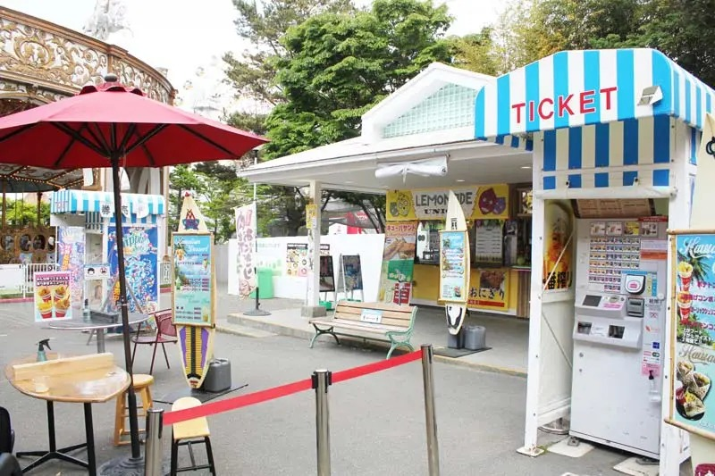
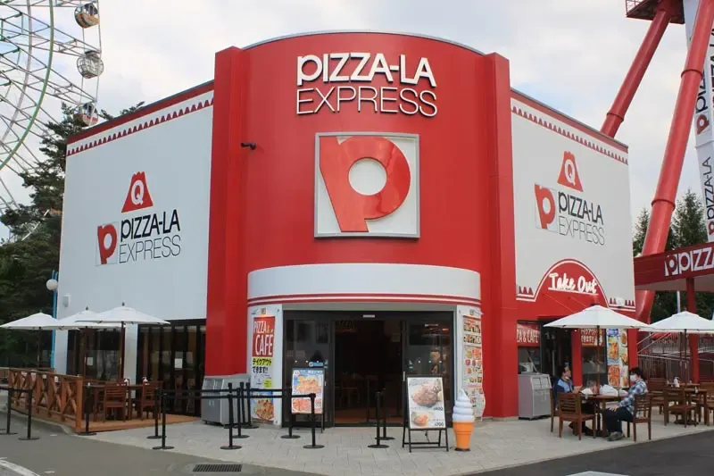
🍔方便程度：★★★★★
從第一入園口入場並經過「麗莎與卡斯柏小鎮」後，就會看到眾多小吃攤販，包含刨冰、棉花糖、日式炒麵等等，其中也不乏日本時下流行的美食哦！
富士急樂園皆採販售「餐券」的形式，在售票機選取餐點並購買餐券後，再前往窗口換取餐點。
如果想要在室內吹冷氣悠閒用餐，園區內也設有美食廣場和PIZZA、漢堡等速食餐廳。
2. CAFE BRIOCHE
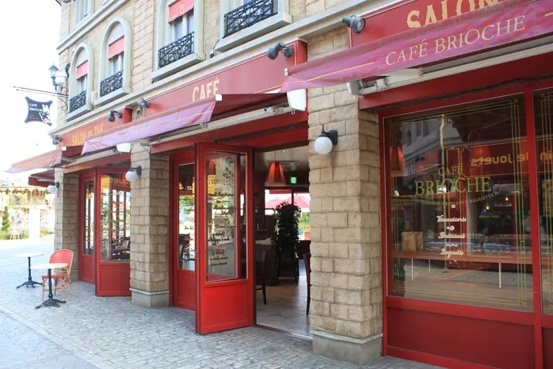
😎休閒程度：★★★★★
位於第一入園口前方、坐落於「麗莎與卡斯柏小鎮」裡的麵包店「CAFE BRIOCHE」，裝潢充滿了時尚巴黎風，可選擇內用或是於戶外露台區座位用餐。麵包師傅精心製作的甜點類麵包與三明治美味無比，推薦大家可以品嚐看看。
3. 美食廣場
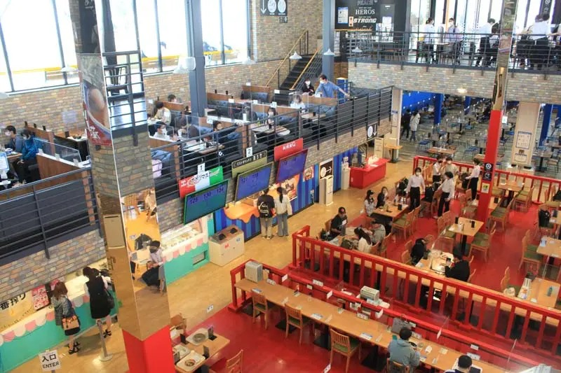
🍜種類多寡：★★★★★
在「美食廣場」（フードスタジアム）有多家餐飲店集結，提供烏龍麵、漢堡、蓋飯、咖哩飯、甜點飲料等多種餐飲選擇，亦有不少以園內遊樂設施為靈感設計菜單的店家。在1、2樓都設有座位區，並有專為兒童設計的低座位親子用餐區，滿足各個客層的需求。
4. 一樂拉麵
🥷還原程度：★★★★★
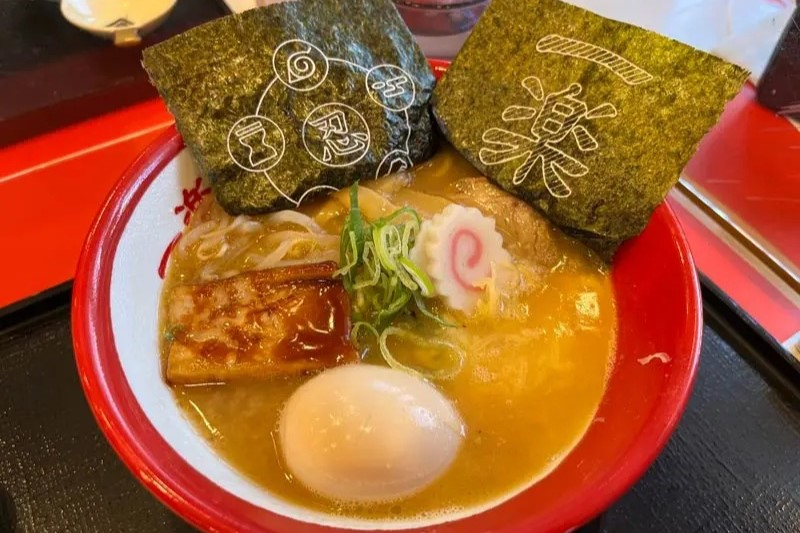
🥷還原程度：★★★★★
以火影忍者主角漩渦鳴人時常造訪的拉麵店「一樂」為概念的「拉麵一樂」，這裡提供以劇中角色為主題的原創拉麵及上鏡搶眼的甜點飲料等各種餐點，能夠吃得開心又飽足。
動漫作品《火影忍者》中，「一樂拉麵」為經典的場景之一，而在富士急樂園火影忍者園區內的拉麵店「一樂拉麵」，不僅可以品嚐到火影忍者的主題拉麵，運氣好的話，還有機會和作品中的角色面對面一同用餐。
禮品店
1. SHOP FUJIYAMA
🎁種類多寡：★★★★★
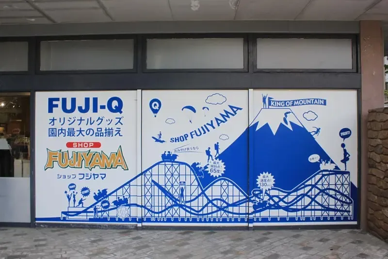
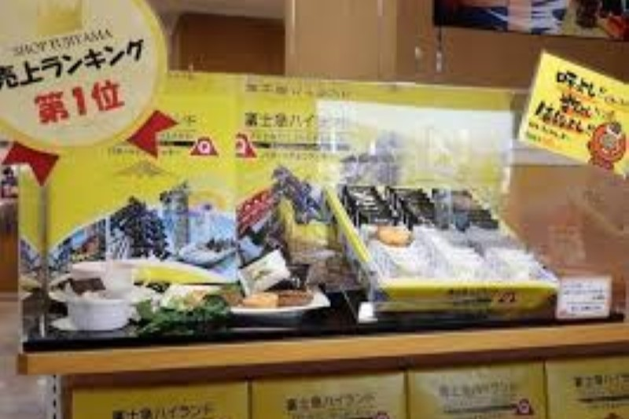
🎁種類多寡：★★★★★
在園內各區都設有伴手禮商店，其中以「SHOP FUJIYAMA」品項最齊全，販售的商品多達2,000種，且位於第一入園口的絶佳位置，一天玩下來要離開前，正好可在此購物，為旅程劃下完美句點。像是「桔梗屋信玄餅」、「富士山造型餅 富士飛行社」等，都是大推的熱門商品。
園區最大型的紀念品商品，除了售賣富士急樂園的原創商品，還有很多山梨縣的特色伴手禮，包括富士急樂園包裝的巧克力、巧克力蛋糕、山梨縣的糕餅、葡萄酒等等，除了買來收藏，也非常適合送禮
其中最受歡迎的是「樂園 奶油＆巧克力餅乾」（42片／含稅1,430日圓），價格實惠且每片餅乾採獨立包裝，方便分送。
2. 自由堂藥局
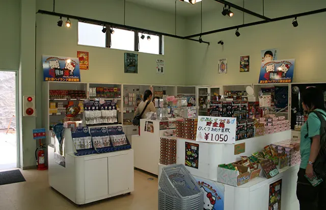
👻特殊程度：★★★★★
以鬼屋戰慄迷宮為主題的商店，售賣各種恐怖造型商品，比如乳房布丁、甚至有護身符，非常貼合鬼屋醫院的設定。
3. 火影忍者聯名店
🥷還原程度：★★★★★
伴手禮區還有販售富士急樂園限定的火影忍者聯名商品。這些只有富士急才能買到的火影商品很適合買給喜歡火影忍者的朋友當伴手禮。
周遭住宿
1. 富士急樂園飯店
富士急樂園飯店（Highland Resort Hotel & Spa）於1986年開幕，是一家擁有豐富歷史和獨特魅力的度假飯店。飯店位於富士急樂園旁邊，步行僅需10分鐘，方便遊客盡情享受遊樂園的各種設施；在住宿上，飯店客房寬敞明亮，並且可以欣賞到壯麗的景色，還特別設計了以遊樂園為主題的家庭房，深受親子住客喜愛，成為許多預計前往富士山的旅客，不可錯過的下榻之地。
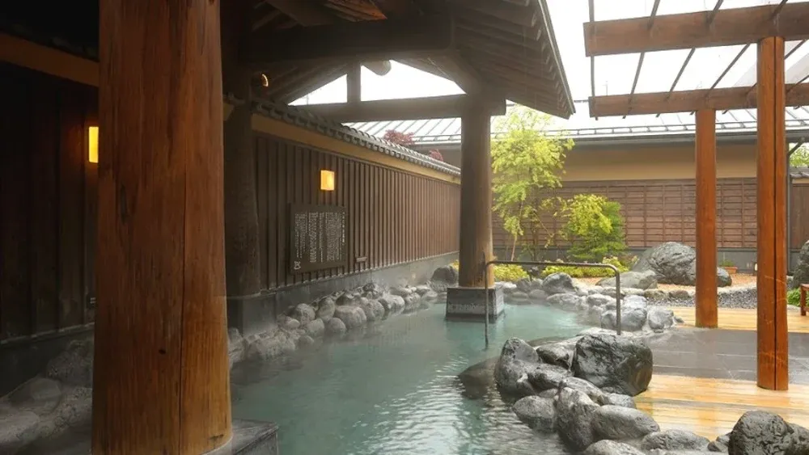
2. 河口湖廣場旅館
河口湖廣場旅館就在車站前，周邊有超商地點絕佳，老闆爺爺和藹和親，退房時還送富士山明信片。
旅館稍舊有年代感，不過超級乾淨且舒適。房間大有電梯，打開窗看到富士山好滿意，晚上11:30後有門禁。
退房後不能寄放行李，但附近就有收費寄放區，下次攀登富士山還要來這家河口湖平價住宿。
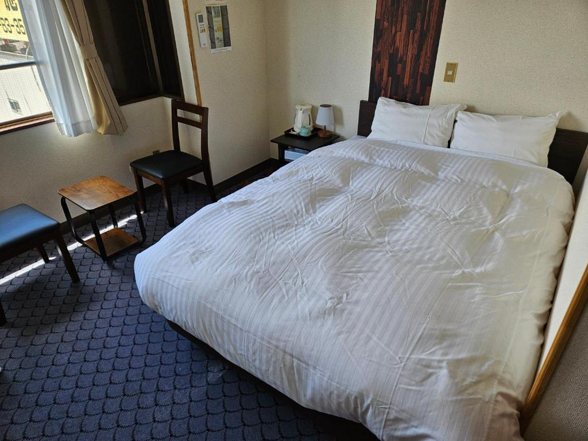
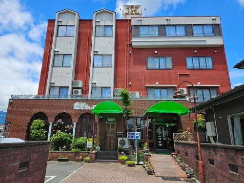
河口湖廣場旅館就在車站前，周邊有超商地點絕佳，老闆爺爺和藹和親，退房時還送富士山明信片。
旅館稍舊有年代感，不過超級乾淨且舒適。房間大有電梯，打開窗看到富士山好滿意，晚上11:30後有門禁。
退房後不能寄放行李，但附近就有收費寄放區，下次攀登富士山還要來這家河口湖平價住宿。
3. 湖山亭產屋
湖山亭產屋有迎賓點心、生日送小驚喜，交通位置非常完美，一房難求的五星級河口湖飯店。
房間非常大且正對富士山，坐在窗邊喝茶，眺望富士山奇景，景色令人屏息，附露天溫泉房型更是一大享受。大浴場和露天溫泉風景同樣美到爆。
免費按摩椅、大人小孩版乒乓球室、拍照道具室等，晚餐和牛涮涮鍋，好吃到不行，此生必住貴的值得。
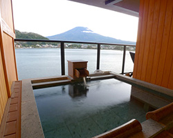
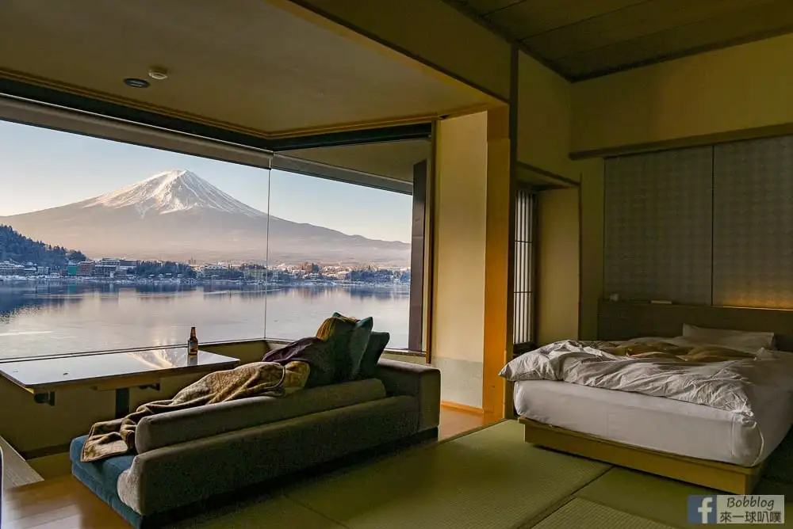
湖山亭產屋有迎賓點心、生日送小驚喜，交通位置非常完美，一房難求的五星級河口湖飯店。
房間非常大且正對富士山，坐在窗邊喝茶，眺望富士山奇景，景色令人屏息，附露天溫泉房型更是一大享受。大浴場和露天溫泉風景同樣美到爆。
免費按摩椅、大人小孩版乒乓球室、拍照道具室等，晚餐和牛涮涮鍋，好吃到不行，此生必住貴的值得。